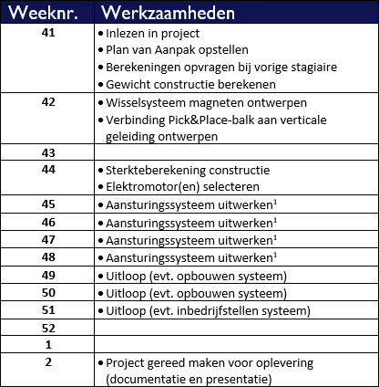
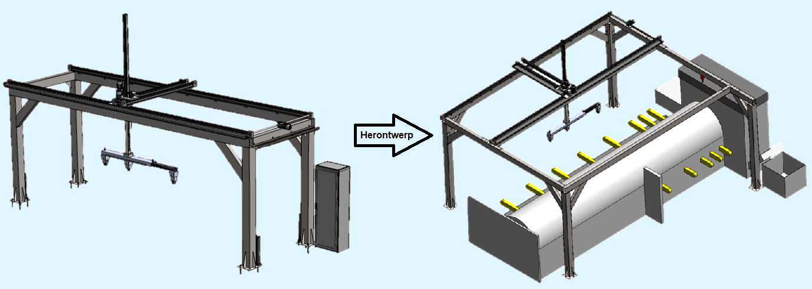

Tijdens de minor Smart Industry voer ik samen met mijn teamgenoot Robert van de Waerdt een project uit. Gedurende
12 weken gaan wij aan de slag met een opdracht voor het bedrijf
"Heel Metaal".
Heel Metaal is een bedrijf dat gespecialiseerd is in metaalbewerking. Ze leveren klant-specifieke oplossingen,
dit kan een metaalplaat zijn die slechts enkele bewerkingen ondergaan is of een compleet product. Geen project is
te klein of te groot.
Heel Metaal heeft een lasersnijmachine staan die buizen snijdt. Zodra deze buizen gesneden zijn worden ze door
de machine uitgevoerd. In de huidige situatie moeten deze buizen handmatig uit de machine gehaald worden. Het bedrijf wil
graag een oplossing die de buizen uitmatisch uit de machine haalt, buffert en sorteert op lengte. Hierbij moet de
oplossing communiceren met de machine zodat de machine niet door gaat produceren en de buffer overloopt.
Update week 1 en 2
Week 41 en 42
In de eerste week hebben we ons bezig gehouden met het inlezen in het project. Omdat we werken aan een project waar meer dan een
jaar geen aandacht meer aan besteed is, zijn we eerst gaan onderzoeken waar we staan in het project. Hieruit is gebleken dat
het ontwerp bijna af is. Het ontwerp moet op een aantal puntjes nog verder uitgewerkt en gecontroleerd worden. Als dit klaar is
moet het mechaniek, elektronica en software op elkaar afgestemd worden. Omdat ik en Robert geen kennis hebben van elektronica en
de software gaan we hierbij de hulp van professionals inschakelen.
Werkzaamheden project:
Berekening maken van het gewicht van de producten.
Ophanging van de magneten moet ontworpen worden, hierbij moeten de magneten verwisselbaar zijn.
Verbinding tussen de magneetarm en verticale geleiding herontwerpen.
Doorrekenen van de constructie.
Elektromotoren selecteren voor het aandrijven van de liniaire geleidingen.
Onderzoek naar het gebruik van camera's en sensoren.
Voorzieningen in het ontwerp tekenen voor elektronische componenten.
Controleren en uitwerken van de aansturing (pneumatisch en elektronisch).
Projectplanning:

In de eerste twee weken zijn we veel opgeschoten. We hebben eerst een Plan van Aanpak opgesteld. Hierna zijn we ons gaan
verdiepen in het huidige ontwerp en hebben we bekeken wat er exact nog gedaan moest worden. Ik heb berekeningen gemaakt waarmee ik
gecontroleerd heb of de ontworpen constuctie sterk genoeg is. Helaas was dit niet het geval. Samen met Robert heb ik de
berekeningen in Excel gezet zodat we niet zelf zoveel hoeven te rekenen. Met de hulp van Excel hebben we snel kunnen ontdekken
welke aanpassingen zinvol zijn de constructie te versterken. Ook zijn we bezig geweest met het verder
ontwerpen in SolidWorks. We hebben ook een oplossing ontworpen voor het monteren van de magneten en de magneetarm.
Voor het grootste deel staat alles nu ingetekend, we zijn nog wel wat tijd kwijt aan het intekenen
van alle voorzieningen voor de elektronica en pneumatiek. In de tweede week hebben we de leverancier van de liniaire geleidingen
op bezoek gehad. We hebben besproken wat onze toepassing was en de leverancier gaat nu controleren of de gekozen geleidingen
geschikt zijn en maakt hiervoor een offerte.
Update week 3 en 4
Week 44 en 45
Ik ben in deze week vooral verder gegaan met de laatste stukjes uitwerken van het ontwerp van de magneetarm en de constructie.
Tijdens een gesprek met de operator van de buislaser werd het mij duidelijk dat de constructie in het huidige ontwerp weleens
in de weg kon staan. De volledige capaciteit en functionaliteit van de machine kan zo niet meer benut worden. Met deze kennis
escaleerden wij naar onze opdrachtgever. Na een goed gesprek en een aantal schetsen werden we het eens dat de constructie aangepast
ging worden en over de machine werd gebouwd.

We hadden contact met een leverancier voor de lineaire geleidingen van het pick&place-systeem. Helaas bleek dat de geleidingen die
eerder door een andere student waren geselecteerd niet voldoen aan de eisen. Even leek het er op dat de leverancier geen oplossing
kon bieden, maar vond gelukkig nog een oplossing bij een andere partij. We zijn nog in afwachting van de oplossing en de offerte.
Verder ben ik bezig geweest met het ontwerpen van de stalen constructie, deze is nu zo goed als af. In een gesprek met de
opdrachtgever, die sinds kort wekelijks plaatsvindt, hebben we groen licht gekregen voor het ontwerp. Ook heb ik de constructie
doorgerekend, de resultaten hiervan waren ook positief.
Helaas liep het niet allemaal zo soepel met het bedrijf die ons wilde helpen met de elektronica en aansturing. Ze hebben ons
gemeld dat hun planning voor dit jaar te vol zat om ons nog te kunnen helpen. Robert heeft contact gezocht met drie andere bedrijven
die ons wellicht kunnen helpen, we zijn nog in afwachting hiervan.
Ook lopen we nogsteeds tegen een klein probleempje aan met het opstapelen van de buizen. Een stapel van meerdere lagen wordt
instabiel. Om dit op te lossen waren er in het oude ontwerp pallets ontworpen met opstaande buizen aan weerszijden die zouden
voorkomen dat de stapel op zou vallen. Echter geven deze opstaande buizen een probleem -> omdat de magneetarm te breed is kunnen
veel buizen niet tegen de rand aan gestapeld worden, en resulteerd dit alsnog in een instabiele stapel. Om dit op te lossen worden
vaak platen gelegd tussen de lagen. Ik en Robert zijn van plan om deze methode ook toe te passen, alleen hebben we nog het probleem
dat de magneetarm zelf de platen moet neerleggen en met de magneten niet in staat is om staalplaten één voor één van een stapel te
halen. Bij het optillen van de bovenste staalplaat zal de magneet hoogstwaarschijnlijk een deel van de onderliggende platen ook
optillen.
Update week 5 en 6
Week 46 en 47
Nadat er een nieuwe aanpassing in het ontwerp gemaakt was ben ik in gesprek gegaan met de operator van de buislaser.
Ik heb hem het ontwerp laten zien en ben samen met hem in gesprek geweest hierover. Ik kwam erachter dat er nog meer aanpassingen
nodig waren om de operator ook tevreden te kunnen stellen. Het grootste probleem voor hem is dat de constructie van het
afnamessysteem hem niet in de weg moet zitten. In het gesprek kwam dus naar voren dat de constructie toch nog in de weg stond.
Hierom heb ik nog een aantal aanpassingen doorgevoerd en ben hiermee weer terug gegaan naar de operator en de opdrachtgever.
Beiden waren tevreden en daarna ben ik verder gegaan met het detailleren van het ontwerp.
Ook is er samen met de opdrachtgever een oplossing bedacht voor het stapelen van de buizen. We gaan platen neerleggen tussen
elke laag die bestaan uit een stalen bovenlaag die gebonden zit aan een onderlaag van hout of rubber. Op deze manier kan de
magneetarm de platen zelf tussen de lagen neerleggen en zal de magneetarm maar één plaat tegelijkertijd oppakken. Of dit in de
praktijk ook werkt willen we nog gaan testen.
We zijn in gesprek geweest met een industriëel automatiseerder. Dit bedrijf gaat kijken of ze ons kunnen helpen met de
elektronica en software van het afnamesysteem. In het gesprek werd duidelijk dat de machineveiligheid nog een probleem kon
gaan vormen. Daarom werd ons geadviseerd om in gesprek te gaan met iemand die hier meer verstand van heeft.
In afwachting van de leverancier van de lineaire geleidingen kan ik de constructie zelf nog niet in detail uitwerken. Echter
is de magneetarm wel ver genoeg. Deze heb ik nu volledig uitgewerkt en ik ben begonnen met het maken van werktekeningen zodat de
magneetarm geproduceerd kan worden.
Feedbackmoment
29 november
Update week 7 en 8
Week 48 en 49
Ik ben verder gegaan met het maken van werktekeningen van de magneetarm. Ondertussen zijn deze klaar en kan de magneetarm geproduceerd worden.
Ook hebben ik en Robert een gesprek gehad met veiligheids wat betreft inloopbeveiliging voor het afnamesysteem. Samen
hebben we gekeken naar verschillende mogelijkheden, zoals lichtschermen, 3D-laserscanners en inloopbeveiliging.
Kostentechnisch hebben we gekozen voor inloopbeveiliging. Dit is voor onze toepassing de makkelijkste en goedkoopste oplossing.
Ook hebben we een test uitgevoerd met het oppakken van tussenplaatjes die gebruikt worden tijdens het stapelen van de pallets.
Hierbij bleek dat de magneet 2 plaatjes tegelijkertijd pakt, dit hadden we al verwacht. Met een beetje proberen hebben we ontdekt
dat er een tussenruimte tussen de plaatjes moet zitten van +/-3mm. De tussenruimte moet opgevuld worden met een niet magnetisch materiaal
dat aan de onderzijde van de staalplaatjes gebonden wordt.
Ook kregen we na lang wachten de 3D-bestanden en de offerte binnen voor de geleiding. Deze offerte viel zwaar tegen. We zijn direct in
spoedberaad gegaan met de odprachtgever omdat we voor een belangrijke keuze stonden: betalen, aanpassen of een alternatief zoeken. Uiteindelijk
hebben we besloten dat we ons aanpassen, we verlagen het draagvermogen van het afnamesysteem zodat het systeem goedkoper wordt. Ook zijn we op
zoek gegaan naar een alternatief, hiervoor zijn 2 bedrijven aangeschreven.
Update week 9 en 10
Week 50 en 51
Week 50, op maandagochtend, kwamen we op kantoor en controleerde ik de mail. We hadden contact gehad met onze contactpersoon over de geleiding.
We gingen de belasting terugbrengen van 330kg naar 130kg. Dit hadden we in de voorgaande week besloten samen met de opdrachtgever. Helaas
hadden we geen werk te doen op het bedrijf en waren we de mail aan het afwachten over de geleiding. In onze wekelijkse meeting op maandagochtend
met de opdrachtgever hebben we geconcludeerd dat we op het bedrijf niks konden doen en we de mails beter thuis konden afwachten. Na het gesprek
zijn we dan ook naar huis vertrokken.
De dinsdag erna ontvingen we een mail over de geleiding. Het kon nu een stuk goedkoper en lichter uitgevoerd worden. Dit heb ik direct
gecommuniceerd met de opdrachtgever en Robert. Heel Metaal was blij verrast!
Week 51, op maandagochtend, kwamen we weer terug op kantoor en zaten we aan tafel met de opdrachtgever voor het wekelijkse overleg. Ook vandaag
was de conclusie dat we weinig konden doen bij Heel Metaal. Ondertussen waren de inkoopdelen voor de magneetarm besteld en stonden alle maakdelen
in de planning voor week 1. Als alles goed gaat, dan kunnen we in week 2 de magneetarm gaan assembleren. Ik heb bij onze contactpersoon voor de
geleiding gedetailleerde 3D-bestanden opgevraagd van de nieuwe geleiding. Hij koppelde terug dat daar nog wat tijd in gestoken moest worden en dat
hij eerst wilde weten wat de slagingskans van het project is. Onze opdrachtgever gaat het project na de feestdagen bespreken met de aandeelhouders,
dus helaas kunnen we nog niet met zekerheid zeggen of het project door gaat.
Ondertussen hebben we contact gelegd met SEW-Eurodrive voor de servormotoren. In afwachting van hun reactie en die van de opdrachtgever kunnen
we helaas niks doen. We hebben dus ook deze week weer besloten dat we vanuit huis contact houden.